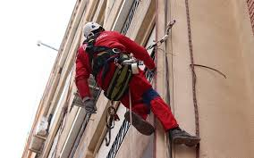
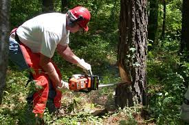
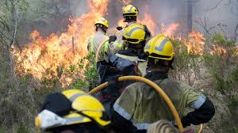

Els riscos derivats de les condicions de seguretat són els causats per elements que,
quan estan presents, poden provocar accidents de treball.
Els riscos deguts a les condicions de seguretat poden estar originats pels següents elements:
| Llocs de treball |
Equips de treball |
Instal·lacions elèctriques |
Incendis |
|  |
 |
|
 |
Els llocs de treball han de reunir una sèrie de condicions perquè no es produeixin
accidents i l'activitat laboral s'hi desenvolupi de manera segura i saludable.
Els llocs de treball són les àrees del centre de treball, edificades
o no, en què la persona treballadora ha de romandre o a què ha d'accedir per a qualsevol
tasca que tingui a veuire amb la seva feina.
Els riscos de treball poden ser font dels riscos laborals següents:
| Riscos en els llocs de treball |
- Caigudes al mateix nivell i a diferent.
- Petjades sobre objectes.
- Xocs contra objectes immòbils.
- Incendis i explosions
|
- Xocs contra objectes mòbils.
- Atropellament amb vehicles.
- Caigudes d'objectes per ensorrament o desplom.
|
Els llocs de treball han de complir unes condicions mínimes, amb la finalitat que no es
generin riscos per a la seguretat i la salut de les persones treballadores:
| Espais de treball i zones perilloses |
-
Els espais de treball i les zones perilloses han de tenir
unes dimensions que permetin la realització de l'activitat sense cap perill i en condicions ergonòmiques adequades:
-
3 m d'alçària des del terra fins al sostre. No obstant això, en locals comercials, de serveis, oficines i despatxos, l'alçària es podrà reduir a 2,5 m.
- 2 m2 de superfície lliure per cada persona treballadora.
- 10 m3 no ocupats per cada persona treballadora.
- Les màquines i els equips de treball s'han de distribuir de manera que no generin riscos.
|
| Sòls, obertures, desnivells i baranes |
- Els sòls han de ser fixos, estables, no relliscosos i no tenir irregularitats ni pendents perillosos.
-
Les obertures en els sòls o les parets i els desnivells que suposin risc de caiguda s'han de protegir
mitjançant baranes o altres sistemes de protecció i seguretat equivalents. Els forats de les parets es protegiran obligatòriament
si l'alçària de caiguda és superior a 2 m.
-
Les baranes de protecció han de ser de materials rígids i resistents, tenir una alçària mínima de 90 cm i, a més, comptar amb una
protecció que impedeixi el lliscament per sota seu.
|